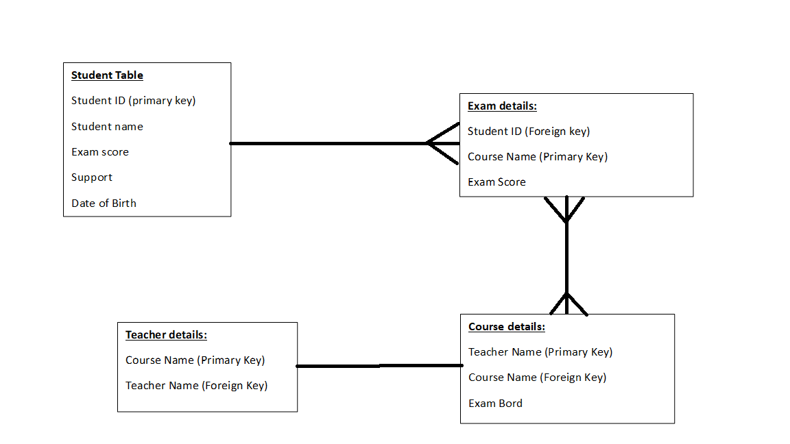

Database Design and Normalisation
In this module, we will look at database design and normalisation, paying particular attention to the formation of a relational database and how it is constructed and broken down into a normalised method for the storage and retrieval of data.As well as un-normalised table and break it down into 1NF, 2NF and 3NF, demonstrating each step taken.
Summarising this modules studies:
- Examine data cleaning with the use of Python examples
- Create data files and convert data sets to CSV format.
- Scrape appropriate web pages.
- Evaluate how Python scripts (codes) can be created for automating the cleaning process.
- Evaluate how automation uses machine learning strategies.
- Understand the use of database representation and architecture.
- Evaluate how the cleaning methods help with the storage of useable datasets
- Understand how a database is created and how it is linked with the use of key fields.
- Analyse anomalies and how they can affect the integrity of the database.
- Look at normalisation and the reasoning behind the use of different normal forms.
- Examine data attributes, associations, operations and relationships.
- Normalise a set of data and Identify constraints associated with the application of the data attributes.
- Construct a relational database model based on normalised data
- Test the database to check for any errors or anomalies.
Normalisation Task
Below you will see a table with data in un-normalised form. You should normalise this data to 3rd Normal Form (3NF), showing each step of the process i.e., demonstrating 1NF, 2NF and 3NF.

In order to represent Data in the First Normalised form it is important that attributes consist of atomic values with no data repetition – in practice this means that each cell should contain a single indivisible value. The Data must be split into multiple tables with each row containing a primary key acting as a unique identifier. Looking at this data, we can split it up into the following tables: Students, Courses, Exam Details, Exam Boards, and Teachers. As shown below:

Teacher attributes in first Normal Form:

Course attributes in first Normal Form:

The exam details table can be further split up into additional tables which will represent the second normal form. First a table representing student courses in second normal form can be created:

This data can be further condensed into the 3rd Normal form as represented in the table below, for both course details-teacher dteails and exam board details:

Course attributes in first Normal Form:

Relational Database Design Task
The second Task was to produce a relational database. A relational database structures data organised in tables with predefined relationships among them. Each table represents a specific entity, and rows within the table represent individual records, while columns define the attributes of those records. Relationships are established through keys, ensuring data integrity and consistency. In this case each table contains a primary key which acts as an anchor to a foreign key in a related table as demonstrated below:
